Cluster kinematics, counts and light¶
Shorthands (CAT, raw/, proc/) are defined on the Data products page.
Figures¶
All drawn from the current processed products (bin/plot_data_products.py, ocen plot-data, bin/build_mass_function.py).
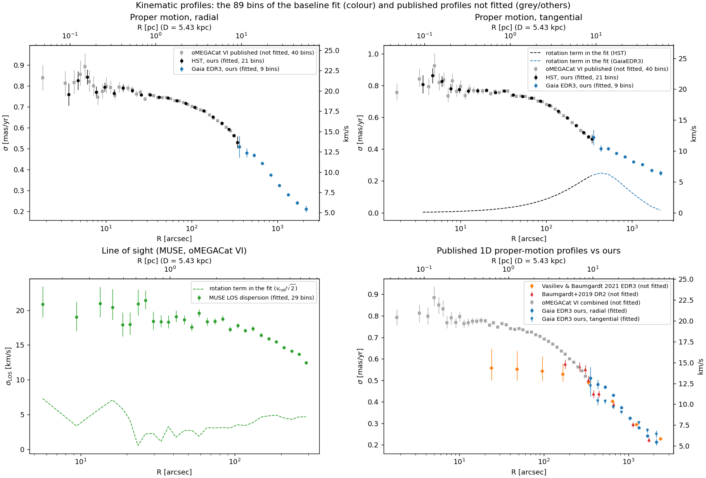
The 89 kinematic bins of the reference fit (colour) and published profiles that are not fitted. Top: HST proper-motion dispersions, radial and tangential (ours, black; oMEGACat VI published, grey) continued outward by our Gaia EDR3 profiles (blue); dashed: the rotation term each fitted profile carries. Bottom left: MUSE line-of-sight dispersion with its rotation term (v_rot/√2). Bottom right: published one-dimensional Gaia proper-motion profiles (Vasiliev & Baumgardt 2021, Baumgardt+2019) against ours; the Vasiliev & Baumgardt profile lies below the HST values inside ~200″. Proper motions in mas/yr (right axis: km/s at 5.43 kpc).
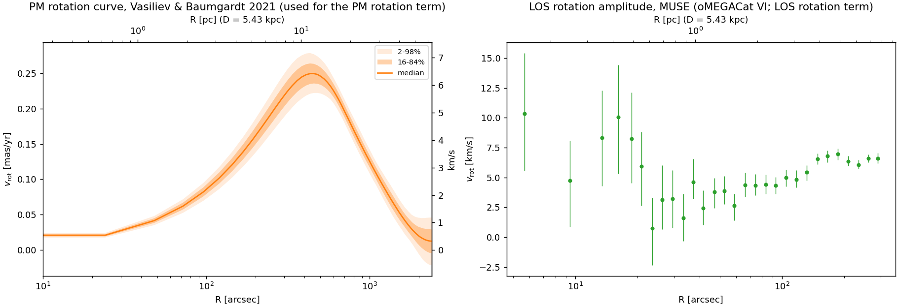
Rotation used in the streaming correction. Left: Vasiliev & Baumgardt 2021 proper-motion rotation curve (median, 16–84% and 2–98%), peaking at 0.25 mas/yr (≈6.4 km/s) near 450″. Right: MUSE line-of-sight rotation amplitude (oMEGACat VI), rising from ~3 to ~7 km/s between 30″ and 300″.
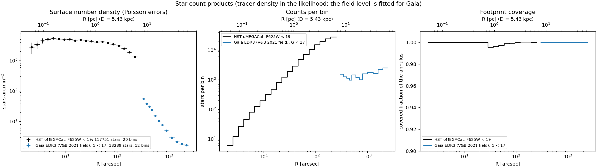
The Poisson star-count products. Left: surface number density, HST F625W < 19 (2–250″, 117,751 stars) and Gaia G < 17 (300–2400″, 18,289 stars including field). Middle: stars per bin. Right: covered fraction of each annulus (≥ 0.995).
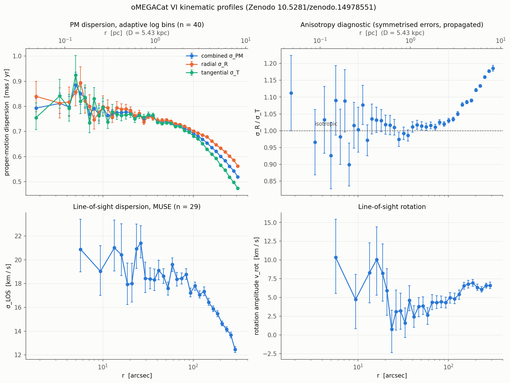
The published oMEGACat VI profiles: proper-motion dispersions (combined, radial, tangential), the σ_R/σ_T anisotropy diagnostic (isotropic inside ~100″, radially biased outside), MUSE line-of-sight dispersion and rotation.
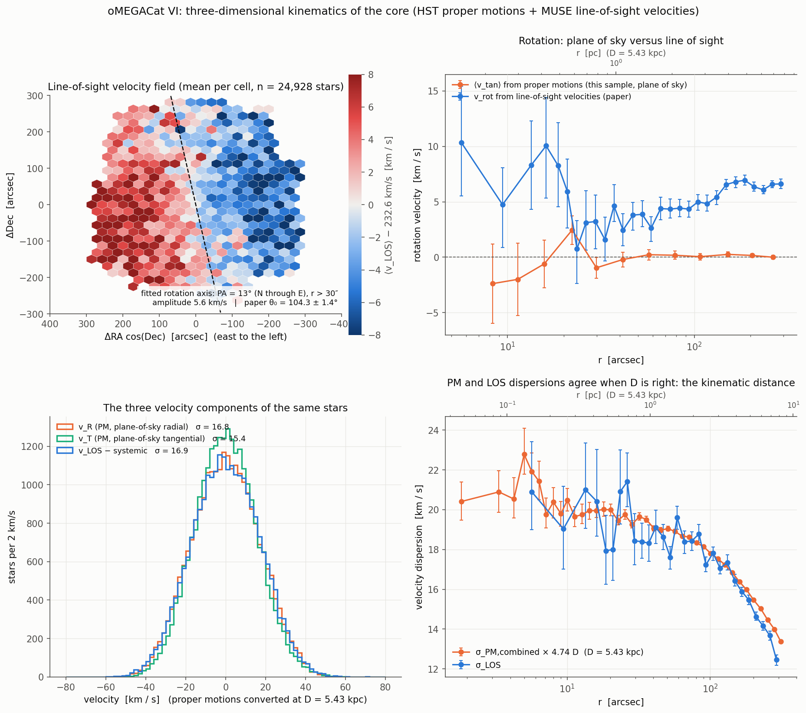
Three-dimensional kinematics of the core from the same stars: line-of-sight velocity field with the fitted rotation axis; plane-of-sky versus line-of-sight rotation; the three velocity components; and proper-motion against line-of-sight dispersions, which agree at the adopted distance.
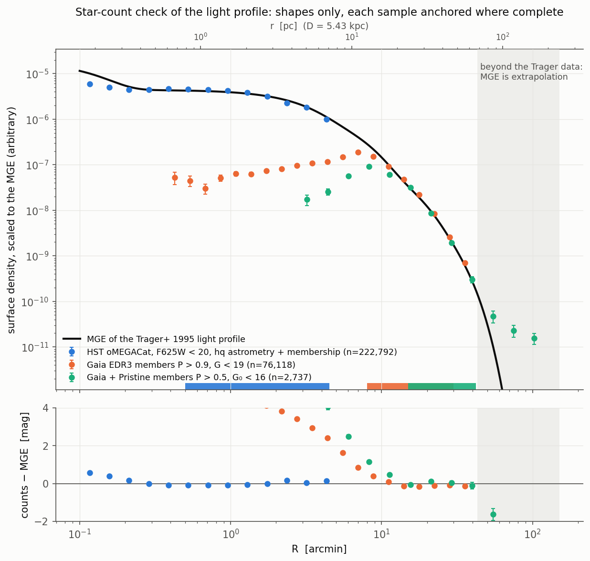
Shape of the light profile: the MGE of the Trager+1995 profile (used as the tracer of the earlier Jeans fits) against star counts from HST oMEGACat, Gaia EDR3 members and Gaia+Pristine members, each anchored where complete. Beyond the Trager data the MGE is an extrapolation.
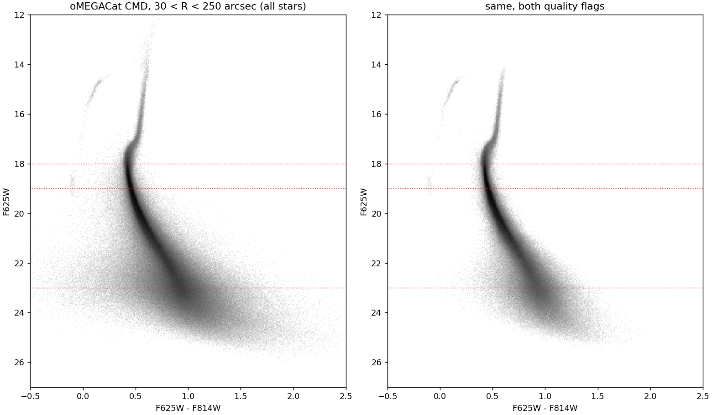
oMEGACat colour–magnitude diagram, 30–250″, all stars (left) and with both quality flags (right). Dotted: F625W = 18 (turnoff), 19 (count-product limit) and 23 (luminosity-function turnover).
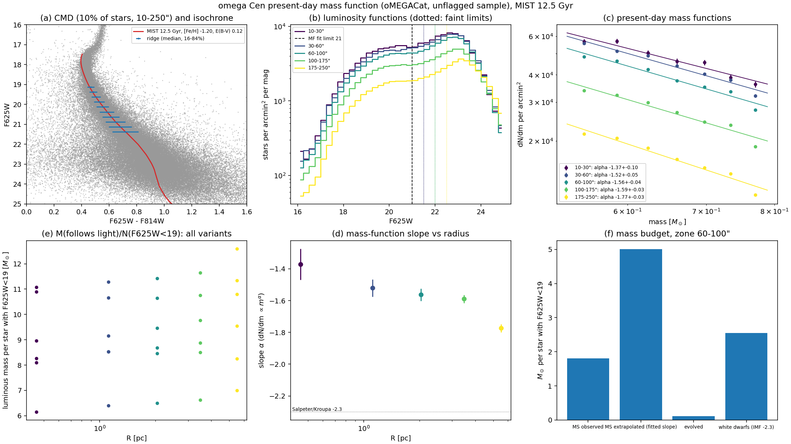
Present-day mass function from the unflagged oMEGACat sample with a MIST 12.5 Gyr isochrone: CMD and ridge line; luminosity functions in five radial zones; mass functions over 0.52–0.78 M☉ with slopes steepening outward (−1.37 to −1.77); the light-following mass per F625W < 19 star for each variant; and the budget in the 60–100″ zone (observed main sequence, extrapolation below 0.52 M☉, evolved stars, white dwarfs).
0. How the reference DF likelihood consumes its data¶
- Driver.
bin/run_compact_df_recovery.py. prepare-real(prepare_real, lines 228–330) copiesproc/kinematics/<count>.jsoninto the run directory and records each sha256 (lines 254–257).- It copies the kinematic
data_snapshot.jsonfromresults/df/pilot_no_dm_20260922;--start-fromsets the starting configuration. - With
--count-tie JSON(line 829) it stores the amplitude tie inproblem.jsonand the batch manifest. - It writes
problem.json. The reference record isphotometry: false, counts: [ocen_counts_hst_f625w19, ocen_counts_gaia_g17]. - At run time
load_problem(lines 62–74) verifies the count sha256 and rebuilds theDFJointProblem, with the tie if one is recorded. - Frozen inputs of the reference fit,
results/df/dftwo_counts_area_20261013/observed/:
| File | Size (B) |
|---|---|
data_snapshot.json |
19,656 |
ocen_counts_gaia_g17.json |
5,368 |
ocen_counts_hst_f625w19.json |
9,132 |
problem.json |
740 |
batch.json records source_commit 1af8c33, gaia_error_floor_masyr 0.0 and distance 5.43 (fixed in the starting config; free between 4.8 and 6.0 in coordinates; the same in the tied variant). The count files are schema 2, and their sha256 match the current products.
- Tied variant. results/df/dftie_restart_20261016/observed/ holds the same data_snapshot.json, ocen_counts_hst_f625w19_c.json (12,016 B), ocen_counts_gaia_g17_c.json (7,444 B) and a problem.json (1,085 B) that carries the count_tie record (ratio 11.4162 ± 0.2273). batch.json records source_commit 30bdcb3.
- Snapshot chain. The data_snapshot comes from results/df/pilot_no_dm_20260922, whose run.json has data_source = results/fits/rung2_K1_turnover. The sha256 570399f38ab2… is identical in rung1_K1_slice/summary.json and rung2_K1_turnover/summary.json.
- Gate output. report.json lists χ² per point by dataset and the count deviance, for the best job of each fit:
| Dataset | χ²/pt, reference (start 3) | χ²/pt, tied (start 0) |
|---|---|---|
| hst_pm_radial_ours | 2.03 | 2.09 |
| hst_pm_tangential_ours | 1.89 | 2.02 |
| muse_los_dispersion | 1.31 | 1.33 |
| gaia_edr3_ours_radial | 1.60 | 2.12 |
| gaia_edr3_ours_tangential | 2.39 | 1.69 |
| HST counts, deviance / bin | 4.85 | 4.21 |
| Gaia counts, deviance / bin | 2.10 | 3.82 |
The tied fit's amplitude ratio is 11.88 against the prior 11.42 ± 0.23 (χ² 4.2).
- Historical baseline. results/df/dftwo_counts_20260923 (schema-1 counts, source_commit 36bca6f) was the baseline until 2026-10-13. Its frozen count files (3,226 and 5,411 B) match proc/kinematics/ocen_counts_*_schema1_20260923.json; its start-0 deviance per bin was 4.94 (HST) and 2.19 (Gaia).
- Default dataset list. src/ocen_dm/cli.py:364 DEFAULT_DATASETS holds the same five kinematic keys.
- The note at cli.py:359–363 records why gaia_edr3_pm (published VB21 spline) was replaced on 2026-09-19.
- It also records why gaia_dr2_pm was dropped on 2026-09-20.
- Duplicate guard. likelihood.py:373 _FORBIDDEN_TOGETHER refuses combinations that share stars, for example published plus "ours" HST, or VB21 plus our Gaia.
K1. HST PM dispersion, our measurement (hst_pm_radial_ours, hst_pm_tangential_ours)¶
- Source. oMEGACat VI (Häberle et al. 2025, ApJ).
- arXiv: https://arxiv.org/abs/2503.04903
- DOI: https://doi.org/10.3847/1538-4357/adbe67
- Data: https://doi.org/10.5281/zenodo.14978551
- Raw file.
raw/omegacat_vi_kinematics/catalog_and_selections.fits(260,994,240 B). The published md59de5a701…was verified inprovenance/manifest.json. Since 2026-10-16data/raw/omegacat_vi_kinematicsmay be a local link to an external copy of the release; the files were re-verified againstprovenance/checksums.txtafter the move. - Builder.
src/ocen_dm/kinematics/hst_profile.py: load_hst_sample(:112)hst_profile(:170)build_hst_profile(:221, writes :243)load_hst_product(:248)- Selection.
- oMEGACat
selection_hq_astrometry > 0(flagged stars only;require_flag=True,correct_unflagged=False). - Edges
DEFAULT_EDGES = geomspace(2, 250, 21) ∪ [300, 340, 360]arcsec (:101), giving 21 bins (r_median 3.65–341.5″). - Each bin is fitted as a cluster 2-D Gaussian plus a field mixture, using the K8 field template in absolute PM.
- Product.
proc/kinematics/ocen_pm_dispersion_hst_ours.ecsv(10,949 B; built 2026-09-20T08:46Z). - Columns:
r_lower/r_median/r_upper[arcsec],n_stars,n_flagged,f_unflagged,f_field,sigma_pmr(_err),sigma_pmt(_err),sigma_pm(_err)[mas/yr],sigma_raw,sigma_sys,sigma_kms(_err),r_pc,r_node0..7. - Metadata:
unflagged_bias (1.077, 0.011)is recorded but not applied. - Likelihood use.
likelihood.py:275 _hst_ours. - Errors are symmetric.
- The tangential component adds ⟨μ_T⟩² from the K5 rotation curve as
streaming2. The rotation-curve error is propagated in quadrature (streaming_error_on_sigma, :153). r_nodesgives star-weighted radial averaging.- Restrictions.
- Metadata note: HST PMs are locally corrected, so the dispersion is about a rotation-free mean.
- Shares stars with K7, so the two cannot be combined (
_FORBIDDEN_TOGETHER). - Status. a, b (Jeans rung0/1/2). The loader auto-builds the product if it is missing, per the README.
K2/K3. MUSE LOS dispersion and LOS rotation¶
- Source. oMEGACat VI, as for K1.
- Raw file.
raw/omegacat_vi_kinematics/los_profile.fits(17,280 B; md5 verified). The.dattwin (4,237 B) is unused. - Builder.
src/ocen_dm/data/omegacat.py:257 preprocess(CLIocen preprocess --dataset omegacat,cli.py:82). The configuration is inconfigs/data.yamlomegacat_vi.products. - Products.
proc/kinematics/omegacat_vi_los_dispersion.ecsv(29 rows). r_median 5.66–290.3″ (edges 0–332.3″). Columnssigma_los,sigma_los_err_lo/hi[km/s], plussrc_*copies.proc/kinematics/omegacat_vi_los_rotation.ecsv(29 rows). Columnsv_rot,v_rot_err_lo/hi[km/s],theta_0[deg].- Likelihood use.
likelihood.py:172–203. - The two-piece Gaussian handles the asymmetric errors.
streaming2 = v_rot²/2(:182–186), with a check that the bins are identical.- No rotation error is propagated for MUSE (module docstring).
- Metadata rule (
ocen_likelihood_rule): "binned profile: compare a model integrated over the same radial bin and tracer selection; bins share stars with other binnings of the same data, so alternative binnings are not independent likelihood factors". - Status. a, b.
K4. Gaia EDR3 PM dispersion, our measurement (gaia_edr3_ours_radial, gaia_edr3_ours_tangential)¶
- Source. Vasiliev & Baumgardt (2021), MNRAS 505, 5978.
- arXiv: https://arxiv.org/abs/2102.09568
- DOI: https://doi.org/10.1093/mnras/stab1475
- Data: https://doi.org/10.5281/zenodo.4891252
- Input. K6 member catalogue.
- Builder.
src/ocen_dm/kinematics/outer_gaia.py:61 build_edr3_profile;load_edr3_profile(:141) auto-builds if missing. - Selection.
- Quality bit 2 (
QUALITY_BIT). - Mean PM error < 0.4 × the published σ(R). That σ(R) comes from K5 through
vb2021_replication.published_profile. - Edges
[300, 380] ∪ geomspace(460, 2400, 8)arcsec give 9 bins (r_median 357–2149″). Bins with fewer than 25 stars are skipped. - Per bin: the K8 field template matched to the bin's error ceiling and G range; exact perspective correction; depth dispersion from the composite tracer L2 (
_composite_tracer, :56). - Membership probability is not used as a weight.
- Product.
proc/kinematics/ocen_pm_dispersion_edr3_ours.ecsv(7,735 B; built 2026-10-11T07:11Z, with values identical to the 2026-09-23 snapshot). - Raw-error columns:
sigma_pmr(_err),sigma_pmt(_err). - Eta-inflated alternatives:
sigma_*_eta(_err). - Also
mean_pmr,mean_pmt,streaming2,f_field,median_eta,median_g,r_node0..7. - Metadata note:
sigma_sys(half the raw/eta gap) is not added to the errors. - Likelihood use.
likelihood.py:308. Defaults:error_model="raw"androtation="published"(the K5 curve with its percentile error). The variantrotation="ours"uses the fitted mean motion instead. - Restrictions. Shares stars with K5, K9 and the combined key
gaia_edr3_ours(forbidden together). - Status. a, b.
K5. Vasiliev & Baumgardt 2021 PM dispersion and rotation profiles¶
- Raw file.
$OCEN_CATALOGUES/vasiliev_baumgardt_2021_clusters.zip(118,940,646 B). This is outside the repo. The published md53a07093b…is recorded as verified. The product reads the memberprofiles/NGC_5139_oCen.txt. - Builder.
src/ocen_dm/data/vasiliev2021.py:146 load_profilesand:171 preprocess. - Product.
proc/kinematics/vasiliev2021_ocen_pm_profiles.ecsv(101 rows, r 0–2400″). - Columns:
sigma_pm_p02..p98,vrot_pm_p02..p98[mas/yr],undocumented_col12(meaning unknown; absent from the readme). - The source r is in degrees and is converted to arcsec.
- Consumers.
likelihood.pm_rotation_curve(:123) andpm_rotation_error(:137): streaming term for K1 tangential and K4 tangential (a*)._vasiliev2021(:220, keygaia_edr3_pm, thinned to 8 points): legacy Jeans runs such asresults/fits/K1_noDM_composite(h).vb2021_replication.published_profile(:66): K4 error cut.plotting/constraints.py.- Metadata rule. "authors' binned PM profiles from the same stars as the member catalogue: not independent of a likelihood built on those stars".
K6. Vasiliev & Baumgardt 2021 member catalogue (ω Cen)¶
- Raw file.
CAT/gc_members_gaia_vasiliev.fits(222,621,120 B; sha256a75b33ca…). This is the user's FITS compilation of the zip. Its ω Cen block was checked againstcatalogues/NGC_5139_oCen.txt; details indatasets.yaml. - Builder.
src/ocen_dm/data/vasiliev2021.py:131 loadand:171 preprocess. All 228,055 rows are kept with no probability cut (2,343,282 rows in the file). - Product.
proc/tails/vasiliev2021_ocen_members.ecsv(31,197,357 B). - Columns:
source_id,ra,dec,x,y[deg],parallax(_error)[mas],pmra,pmdec(_error)[mas/yr],pmra_pmdec_corr,g_mag,bp_rp,source_density[arcmin⁻²],quality_flag(bit 0: 5-parameter solution; bit 1: passed quality filters),membership_prob. - Metadata rule. "astrometric membership probability: use as a stated selection threshold that belongs to the selection function, not as a per-star likelihood weight".
- Consumers.
outer_profile.load_members(:121) → K4, K8 (the μ_sys estimate)bin/build_count_profiles.py:117→ C2selection/hst_gaia_match.py:53→ K10cluster.centre("vasiliev")vb2021_replication- plots
- Status. a*.
K7. oMEGACat VI published PM profiles (hst_pm_radial, hst_pm_tangential, hst_pm_combined)¶
- Raw file.
raw/omegacat_vi_kinematics/proper_motion_dispersion_log_bins.fits(17,280 B, HDU 1). - Builder.
data/omegacat.py:257. - Products.
proc/kinematics/omegacat_vi_pm_{radial,tangential,combined}.ecsv, 40 rows each, r_median 1.8–311″ (edges to 346″). Columnssigma_pm{r,t,c},_err_lo/_hi[mas/yr], plussrc_anisotropy. - Consumers.
likelihood.py:360–362.- Presets
watkins2013(radial and tangential) andomegacat6,baumgardt2018,imbh_limitinkinematics/presets.py:51–93. - Older Jeans runs (
results/fits/preset_*,K1_noDM_composite). - Plots.
- Restriction.
configs/data.yamlnotes that the three profiles come from one file, so they share bins and stars. Radial, tangential and combined are not independent, andhst_pm_combinedis forbidden with the other two. - Status. b (literature presets only), h, d. They are superseded in the reference fit by K1, which reaches 360″ against the published 300″.
K8. Gaia DR3 field template¶
- Source. WSDB
gaia_dr3.gaia_source. - Query in
selection/field_template.py:35: q3c annulus 0.75–1.6° about (201.69683, −47.47957), G < 20.5, non-null PM. - Fetched 2026-09-20T08:36Z: 267,966 fetched, 231,269 kept.
- Builder.
selection/field_template.py:66 build_product(CLIocen fetch-field-template,cli.py:417,:499). - Cuts. RUWE < 1.4, astrometric excess noise < 1, mean PM error < 1.5 mas/yr. No parallax cut since 2026-09-20.
- Frame. Systemic 3-D velocity projected star by star, with μ_sys taken from K6 ((−3.2514, −6.7444) mas/yr) and v_los = 232.6 km/s.
- Product.
proc/kinematics/ocen_field_template_dr3.ecsv(35,323,170 B). - Columns:
r_arcsec,sys_a,sys_d,mu_a,mu_d,mu_r,mu_t,pm_error,g_mag. - Surface density 10.24 arcmin⁻².
- Consumers.
field_density_2d/field_kdein K1 and K4 (a*);pristine_profile.py;plotting/constraints.py.
K9. Gaia DR2 PM dispersion (Baumgardt et al. 2019)¶
- Source. MNRAS 482, 5138; DOI 10.1093/mnras/sty2997 (
verified: false, from the VizieR record). VizieRJ/MNRAS/482/5138/table4. - Raw file.
raw/baumgardt2019_pm_profiles/baumgardt2019_table4.vot(38,671 B; 319 rows, 9 for NGC 5139). - Builder.
data/baumgardt2019.py:71. - Product.
proc/kinematics/baumgardt2019_ocen_pm_dispersion.ecsv(9 rows, r 179–1747″). Columnssigma_pm,sigma_pm_err_hi/lo[mas/yr],n_stars. - Likelihood use. Key
gaia_dr2_pm(likelihood.py:205), with the note that it is ASSUMED to be a 1-D dispersion with no rotation term. - Metadata rule. "binned DR2 PM dispersion; stars overlap the EDR3 member sample and the Kuzma 2025 members -- not independent".
- Status. h (dropped from the defaults on 2026-09-20,
cli.py:361); used bypreset baumgardt2018and in plots.
K10. HST–Gaia PM cross-match¶
- Builder.
selection/hst_gaia_match.py:36 build_match(tolerance 0.06″, epoch offset fitted). - Product.
proc/kinematics/hst_gaia_pm_match.ecsv(1,554,184 B, 8,064 rows; built 2026-09-19). - Metadata note. HST PMs are relative, so only differences and dispersions are comparable.
- Consumers.
plotting/constraints.py:936,1014. - Status. d.
- Caveat. The project journal (2026-10-08) flags that its
hst_qualitycolumn (hst_gaia_match.py:72) usesselection_hq_astrometry_and_membership, which contains a CMD cut. This was flagged in JOURNAL and left unchanged.
C1/C2. Poisson count profiles¶
- Builder.
bin/build_count_profiles.py(hst_counts:76,gaia_counts:117,build:137,main:154). The likelihood is inkinematics/counts.py(CountProfile:118, schema 1/2 handling into_dict/from_dict:198–221;CountTie:225;tied_compare:272). - Completeness and tie.
bin/build_count_completeness.pywrites the_ccopies with a per-bincompletenessarray and the tie file (see the Large Programme section below).
C1, HST (ocen_counts_hst_f625w19).
- Input. raw/omegacat_vi_kinematics/catalog_and_selections.fits.
- Selection. All stars with measured F625W < 19 and no quality flag: 139,498 stars in the whole catalogue (meta.n_selected), of which 117,751 fall in the 2–250″ bins.
- Binning and coverage. Centre pixel (15000, 15000) at 0.04″/px. 20 log bins from 2 to 250″. Coverage from the occupancy of 3″ cells, set to 1 inside 30″.
- Field term. fit_field=False.
- Rationale (metadata note). The hq flag is 12–15 % radially incomplete; N(<20)/N(<19) = 2.0–2.1 at all radii; the field is below 0.5 % at 250″.
C2, Gaia (ocen_counts_gaia_g17).
- Input. K6.
- Selection. All stars with G < 17, members plus field: 24,695 stars in the whole catalogue (meta.n_selected), of which 18,289 fall in the 300–2400″ bins.
- Binning. 12 full annuli from 300 to 2400″.
- Field term. fit_field=True (a uniform field density is fitted).
Files (both in proc/kinematics/):
| File | Size (B) | Notes |
|---|---|---|
ocen_counts_hst_f625w19.ecsv |
3,870 | schema 2 |
ocen_counts_hst_f625w19.json |
9,132 | schema 2, contains node_weights |
ocen_counts_gaia_g17.ecsv |
2,292 | schema 2 |
ocen_counts_gaia_g17.json |
5,368 | schema 2 |
ocen_counts_hst_f625w19_c.json |
12,016 | schema 2 plus completeness per bin (0.961–0.995) |
ocen_counts_gaia_g17_c.json |
7,444 | schema 2 plus completeness: 0.906 in bin 1 (300–350″), 0.955 from 350″ out |
ocen_counts_tie_c.json |
304 | complete-sample ratio N(F625W<19)/N(G<17) = 11.4162 ± 0.2273 |
ocen_counts_*_schema1_20260923.{ecsv,json} |
— | used by the 2026-09-23 runs (sha256 match); historical |
- ECSV columns.
r_lower,r_upper,r_median,n_stars,coverage,area_arcsec2,density_per_arcmin2,poisson_err_per_arcmin2. - Consumers.
run_compact_df_recovery.pywith--counts: schema 2 in the reference fitdftwo_counts_area_20261013and the black-hole fits; the_cproducts with--count-tie ocen_counts_tie_c.jsonindftie_*_20261016; schema 1 in the historicaldftwo_counts_20260923,rho20scan_*,mpsscan_*and mocks.bin/fit_count_tracer_mge.pyfits the_cproducts and the tie for the J-counts tracer. Plots:bin/plot_count_profiles.py:38,plot_halo_compensation.py,plot_mass_per_star_profile.py,plot_remnant_halo_degeneracy.py,plot_mock_mass_per_star.py. - Likelihood note (
counts.pydocstring). Schema-1 products are "read for replay only" because their mean is star-weighted, biased high by about 3 % per bin for Σ ∝ R⁻². The 2026-09-23 baseline and all 2026-09-23 scans used schema 1. - Status. a (schema 2;
_cand the tie in the tied variant); h (schema 1).
Ratio of the two count products in the overlap (2026-10-16)¶
The fits give C1 and C2 separate free amplitudes, aHST and aGaia. For a single cluster with a single stellar population, their ratio N(F625W < 19)/N(G < 17) is set by the luminosity function. So it can be measured where both catalogues are complete and compared with the fit. The amplitudes have not been tied, and nothing was refitted.
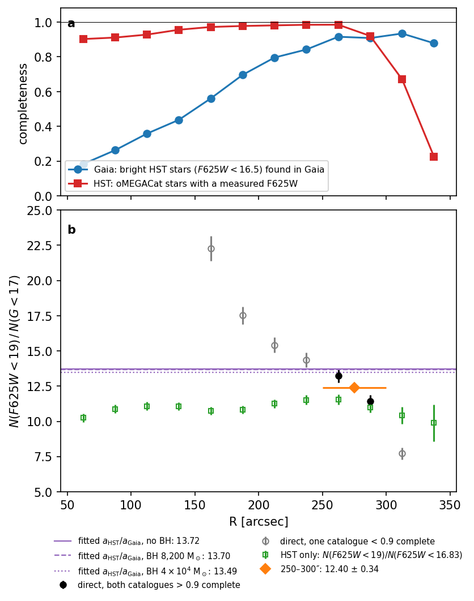
(a) Completeness against radius.
- Gaia: the fraction of bright HST stars (F625W < 16.5) with a Gaia counterpart. The match uses a 0.06″ tolerance, after removing the (−0.045, −0.090)″ offset between the two catalogue epochs.
- HST: the fraction of oMEGACat stars with a measured F625W.
(b) N(F625W < 19)/N(G < 17), from both catalogues counted in the same area (the 3″ cells holding oMEGACat stars), with the 1.60 arcmin⁻² Gaia field subtracted.
- Black and grey points: the ratio in 25″ annuli.
- Orange: the 250–300″ annulus.
- Green: HST alone, N(F625W < 19)/N(F625W < 16.83). Here 16.83 = 17 + (F625W − G), with F625W − G = −0.171 the median for matched stars at 16.5 < G < 17.5.
- Purple lines: the fitted aHST/aGaia.*
Script: bin/check_count_ratio_overlap.py. Numbers: results/plot_data/count_ratio_overlap.json.
Where the measurement is possible.
- Inside 250″ Gaia is incomplete. It recovers 18 % of bright HST stars at 50–75″ and 84 % at 225–250″. The direct ratio therefore climbs inwards (grey points).
- Beyond 300″ HST is incomplete. The mosaic edge leaves only 67 % and 23 % of stars with F625W at 300–325″ and 325–350″.
- Both catalogues exceed 0.9 completeness only at 250–300″. Even there Gaia is 0.91–0.92 complete, not 1.
Results.
| Estimate | N(F625W<19)/N(G<17) |
|---|---|
| Direct, 250–275″ (Gaia 0.92, HST 0.98 complete) | 13.2 ± 0.5 |
| Direct, 275–300″ (Gaia 0.91, HST 0.92 complete) | 11.4 ± 0.5 |
| Direct, 250–300″ | 12.40 ± 0.34 |
| HST alone: ratio for a complete G < 17 sample, 50–300″ | 10.3–11.6, no radial trend |
| HST alone, divided by the measured Gaia completeness at 250–300″ | ≈ 12.3 |
| Fitted aHST/aGaia: no BH, BH 8,200, BH 4×10⁴ | 13.72, 13.70, 13.49 |
- The fitted amplitudes include Gaia's incompleteness. A completeness factor below 1 lowers aGaia and raises the fitted ratio. So the fit should be compared with the raw ratio of Gaia's counts, not with the HST-alone ratio.
- Against the directly measured ratio, the fit is high by 0–10 %.
- It is high by 4 % (1σ) at 250–275″, where both catalogues are most complete.
- It is high by 11 % (3.9σ, Poisson errors only) for 250–300″ as a whole.
- The ratio steps down from 13.2 to 11.4 between the two halves of that annulus, a 2.6σ change. This coincides with HST losing F625W at 275–300″. The HST-alone ratio is flat across the step, so the step is probably not in the luminosity function.
- Against the luminosity-function estimate, the fit is high by 10–15 %.
- The HST-alone ratio divided by Gaia's completeness predicts a raw ratio of about 12.3, against the fitted 13.5–13.7.
- The Gaia counts are fitted beyond 300″. If Gaia is more complete there than at 250–300″, as its rising N(G<17)/N(G<16) (1.75 at 250–275″, 1.87 at 275–300″) suggests, the expected raw ratio is lower still.
- This estimate rests on two assumptions: the F625W − G offset holds at G ≈ 17, and the missing Gaia stars are a magnitude-blind subset.
- What it implies for the model. With one stellar profile and the measured ratio, the current fits would predict roughly 5–15 % more G < 17 stars in the Gaia region than observed, relative to the HST region. Put another way, the fitted profile falls slightly too slowly between the two regions. The fits have no data at 250–300″, so this comparison relies on the model profile being smooth across the gap.
- Precision is set by the catalogue edges. Only one 50″ annulus is usable, and Gaia completeness beyond 350″ cannot be checked against HST. This is a 5–15 % tension, not a firm offset. The completeness-corrected version below and the Large Programme fields put it at 13–15 %.
Completeness-corrected ratio¶
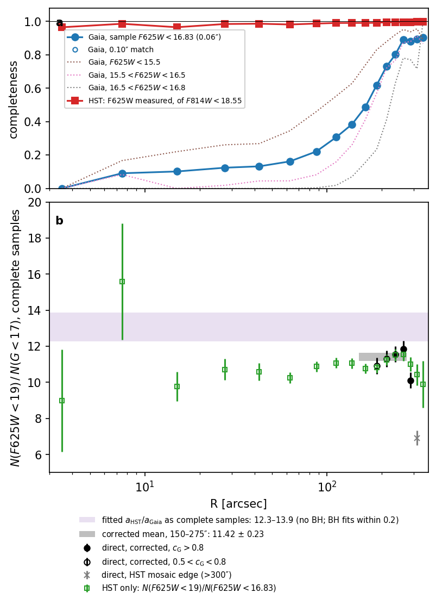
(a) Completeness measured in each sample's own magnitude range.
- Gaia, cG (solid blue): the fraction of oMEGACat stars with F625W < 16.83 (the HST equivalent of G < 17) that have a Gaia counterpart. The 0.06″ and 0.10″ match tolerances give the same values.
- Dotted: cG in three magnitude slices.
- HST, cH (red): the fraction of stars with F814W < 18.55 that have a measured F625W. Here 18.55 is the F814W equivalent of F625W = 19, using the median colour at 18.5 < F625W < 19.
(b) Ratio for complete samples.
- Black: [NH19/cH] / [(NG17 − field)/cG].
- Green: the HST-only ratio.
- Purple band: the fitted aHST/aGaia, converted to complete samples.
- Grey band: the inverse-variance mean of the corrected points at 150–275″.
Script: bin/check_count_ratio_corrected.py.
Completeness.
- Gaia completeness depends strongly on magnitude.
- At 250–300″ the G < 17 sample is 0.89 complete overall: 0.95 for F625W < 15.5, but only 0.77 just above the limit.
- The bright-star value of 0.91–0.92 used above therefore overstated it.
- HST F625W < 19 is complete. cH is 0.96–1.00 at every radius from 2 to 350″, with a count-weighted 0.990 over 2–250″.
- The lower "F625W measured" fraction in the first plot (0.90 at 50–100″) comes from faint stars without F625W, not from stars brighter than F625W = 19.
- So the HST count product does not carry the radial incompleteness suggested there.
The corrected ratio.
- It is flat. From 10 to 275″ it is 10.5–11.9, wherever cG > 0.1, and it agrees with the HST-only ratio in every annulus. This confirms that the completeness estimates account for the inward climb of the raw ratio.
- Mean. The mean at 150–275″ is 11.42 ± 0.23.
- Edge annuli.
- The 275–300″ point is low (10.1 ± 0.4). Beyond 300″ the corrected ratio falls to 6.9 and 2.4, although cH stays near 1 there.
- The HST-only ratio does not fall, so this is a mismatch of area at the mosaic edge, not a change in the luminosity function. The edge cells are only partly covered by HST but are counted as fully covered for both catalogues (the likely explanation, not tested).
- These points are excluded from the mean.
Comparison with the fit.
- Converting the fitted ratio. The fitted aHST/aGaia contains each product's own completeness. It becomes a complete-sample ratio as fitted × cG,out / cH,in.
- cH,in = 0.990.
- cG,out is Gaia's completeness over the fitted 300–2400″. It cannot be measured against HST, so it is taken between 0.886 (the 250–300″ value) and 1.
- This gives 12.3–13.9 for the no-BH fit. The black-hole fits are lower by at most 0.2.
- Result. Against the measured 11.42 ± 0.23, the fitted ratio is 8–22 % too high. Even at the lower end of the band (Gaia completeness 0.886 beyond 300″) the difference is 3.7σ (Poisson errors only); the Large Programme section below gives the most likely value.
- What it implies.
- With one stellar profile, the fits put 8–22 % too many G < 17 stars in the Gaia region compared with the HST region.
- The free aGaia hides this by scaling the Gaia counts down.
- The remaining assumptions: the model profile is smooth across 250–300″, and the missing Gaia stars do not depend on position within each annulus.
- Gaia completeness beyond 350″ is measured with further HST fields; see the next section. (An earlier reading of the oMEGACat data alone, a constant 0.9 "floor", is withdrawn.)
Gaia completeness from the HST Large Programme fields (2026-10-16)¶
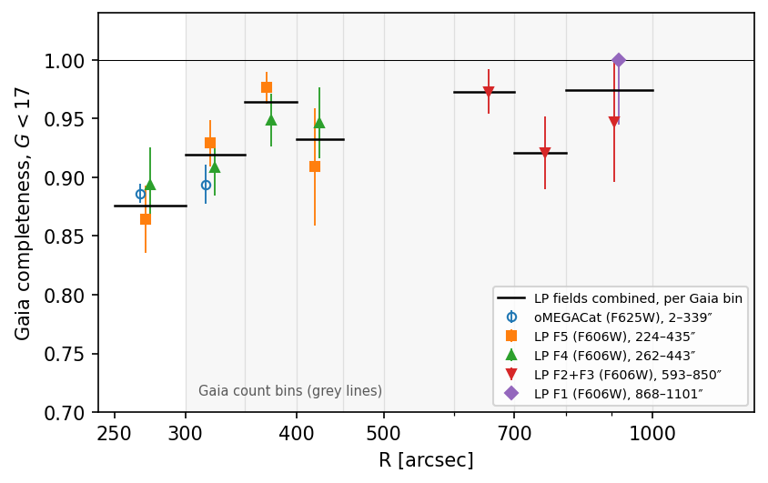
Gaia completeness of the G < 17 count sample against radius. Each point is the fraction of HST stars brighter than the HST equivalent of G = 17 that are present in the Vasiliev & Baumgardt (2021) catalogue used for the Gaia count product.
- HST equivalent of G = 17: F606W = 17.03–17.09 (field-dependent median F606W − G), or F625W = 16.83 for oMEGACat.
- Match: within 0.1″, after removing each field's epoch offset.
- Grey lines: the Gaia count-product bins.
- Black bars: the Large Programme fields combined, per bin with at least 10 stars.
- Error bars: binomial; where every star is found, the 68 % lower limit.
Script: bin/check_gaia_completeness_lp.py. Numbers: results/plot_data/gaia_completeness_lp.json.
HST data. The HST Large Programme on ω Cen (GO-14118+14662, PI Bedin) has five external fields with public catalogues:
| Field | Radius | Reference |
|---|---|---|
| F5 | 224–435″ | Scalco, Bedin & Vesperini 2024, A&A 688, A180 |
| F4 | 262–443″ | same |
| F2 + F3 | 593–850″ | Scalco et al. 2021, MNRAS 505, 3549 |
| F1 | 868–1101″ | Scalco, Bedin & Vesperini 2024 |
They are held in $OCEN_CATALOGUES/omegacen_hst_lp. These fields are uncrowded for Gaia's purposes, and HST is complete there to far below F606W = 17.
Results (stars found / HST stars):
| R | Large Programme fields | cG | oMEGACat |
|---|---|---|---|
| 250–300″ | 205/234 | 0.876 ± 0.022 | 0.886 ± 0.008 |
| 300–350″ (Gaia bin 1) | 286/311 | 0.920 ± 0.015 | 0.894 ± 0.017 |
| 350–400″ (bin 2) | 216/224 | 0.964 ± 0.012 | — |
| 400–450″ (bin 3) | 83/89 | 0.933 ± 0.027 | — |
| 600–700″ | 72/74 | 0.973 ± 0.019 | — |
| 700–800″ | 70/76 | 0.921 ± 0.031 | — |
| 800–1000″ | 38/39 | 0.974 ± 0.025 | — |
| beyond 500″, all | 191/200 | 0.955 ± 0.015 | — |
- Completeness rises outwards and then levels off. It is 0.88 at 250–300″ and 0.91 in the first Gaia bin (300–350″; oMEGACat and the Large Programme combined, 590/651). From 350″ to 1100″ it is a constant 0.95 within the errors.
- The level of about 0.95 is not crowding. About 5 % of the HST stars brighter than G = 17 are missing from the Gaia catalogue even at 600–1100″. That could be stars without a five-parameter EDR3 solution, or losses in the catalogue selection (not identified).
- In F2 + F3 the brightest stars (F606W < 15.5) are found at only 0.91. This may come from spurious HST detections around saturated stars (not tested).
- Effect on the Gaia count product.
- Only the first bin (300–350″) is depleted relative to the rest, by 0.906 / 0.955 = 0.95, i.e. 5 %. A free aGaia cannot absorb that.
- The constant level of 0.95 is absorbed by aGaia.
- Expected amplitude ratio for the raw counts.
- The count-weighted Gaia completeness of the product is ceff = 0.946. The weights are member counts per bin, with cG = 0.906, 0.964, 0.933 in bins 1–3 and 0.955 beyond.
- This gives aHST/aGaia = 11.42 × 0.990 / 0.946 = 11.95 ± 0.3.
- The fits give 13.5–13.7, which is 13–15 % too high.
Change to the count likelihood (implemented 2026-10-16, commit 30bdcb3). It is used in the DF refit and in the count-based tracer of the Jeans twin. The code is kinematics/counts.py (CountProfile.completeness, CountTie, tied_compare), and the products are built by bin/build_count_completeness.py. The Gaia completeness beyond 350″ is 0.955, the Large Programme fields combined.
- Multiply the model Gaia counts in each bin by the measured cG: 0.906 in bin 1 (300–350″) and 0.955 (the Large Programme fields combined) from 350″ out, as stored in
ocen_counts_gaia_g17_c.json. Equivalently, divide the data by it. - Tie the amplitude: aGaia × cG(R) = aHST × 0.990 / 11.42, i.e. the ratio for complete samples, with its 2 % error carried as a Gaussian prior.
- aHST and the uniform field density b stay free. The field term counts the non-member Milky Way stars in the Gaia counts, and is unrelated to the cluster's luminosity function.
L1. Trager, King & Djorgovski 1995 surface-brightness profile¶
- Source. AJ 109, 218; ADS https://ui.adsabs.harvard.edu/abs/1995AJ....109..218T (
verified: false). VizieRJ/AJ/109/218/tables. - Raw file.
raw/trager1995_sbp/trager1995_tables.vot(2,102,164 B; 17,148 rows). - Builder.
data/trager1995.py:87. Rows are filtered tongc5139(73 rows) and r = 10^logr. - Product.
proc/literature/trager1995_ocen_sbp.ecsv. r 10.5–2588″; columnsmu_v,mu_v_fit,residual[mag arcsec⁻²],weight,data_set. - Metadata rule. "surface-brightness SHAPE only: the M/L nuisance parameter absorbs the zero-point; heterogeneous data sets -- use the authors' weights".
- Consumers.
light_model.load_trager_profile(:85) → L2; Jeans--tracer trager(presetwatkins2013).
L2. Composite tracer profile (not a stored product)¶
- What it is.
light_model.composite_profile(:131) /load_tracer_profile("composite")(:165). - Inside 25″: oMEGACat star counts with
selection_hq_f625wand F625W < 19 (star_count_profile, :98). - Outside: Trager, with the zero point anchored over 30–100″ using Trager points of weight ≥ 0.5.
- Consumers.
- Jeans fits:
kinematics/fit.py; tracercompositein rung0/1/2. - K4 depth term (
outer_gaia.py:56). - DF runs without counts. Example:
dftwo_20260923usesphotometry.json, which came fromPhotometricData.from_relative_weights(load_tracer_profile("composite"))inbin/run_df_pilot.py:101. tails/dm_density_plots.py.- Note. L2 uses the hq flag, while C1 deliberately does not.
L3. Baumgardt GC database parameters¶
- Raw file.
CAT/gc_catalog_updated.fits(57,600 B; mtime 2025-05-16). The upstream version is not recorded, so the product is UNVERIFIED against the live database (https://people.smp.uq.edu.au/HolgerBaumgardt/globular/). - Builder.
data/baumgardt_catalogue.py:76. - Product.
proc/literature/baumgardt_ocen_parameters.ecsv(1 row: PM, distance, RV, mass, r_h, r_c, orbit, [Fe/H] and others). - Metadata rule. "use as priors and cross-checks, not as data in the likelihood".
- Consumers.
plotting/data_overview.pyonly. - Systemic values are defined elsewhere.
cluster.pyis the single reference for omega Cen's position, motion and distance (since 2026-10-16), each value with its published source: - centre: oMEGACat / Anderson & van der Marel 2010;
- systemic PM (−3.250, −6.746) ± 0.022 mas/yr: Vasiliev & Baumgardt 2021, Table A1 (the earlier (−3.257, −6.730), labelled with that paper, matched no source);
- v_los 232.7 ± 0.2 km/s: Baumgardt & Hilker 2018;
- distance 5.43 ± 0.05 kpc: Baumgardt & Vasiliev 2021.
- These are the values the oMEGACat papers adopt.
tests/test_cluster_reference.pyfails if any of them is typed in anywhere else insrc/orbin/. - Status. d.
M1. Present-day mass function and mass per counted star (M/N19)¶
- Inputs.
- oMEGACat
catalog_and_selections.fits: unflagged stars with F625W and F814W in zones 10–30–60–100–175–250″, with a common fit limit F625W < 21.0. - MIST v1.2 bolometric-correction tables, through minimint 0.5.1.
HST_ACSWF.txzandHST_WFC3.txzwere downloaded from waps.cfa.harvard.edu/MIST/BC_tables/v1/ and prepared into the prefix$OCEN_ISOCHRONES/minimint_hst/. That directory exists (241 MB; 70 filter files plus symlinks to the base grid). See the project journal. - Builder.
bin/build_mass_function.py: - isochrone
minimint.Interpolator(["ACS_WFC_F625W", "ACS_WFC_F814W"])at line 82; - 12.5 Gyr, D = 5.43 kpc, E(B−V) = 0.12;
- [Fe/H] from the ridge-line fit (adopted −1.20) or forced to
--feh -1.53. - Products.
results/mass_function/mass_function_20260923.json(9,262 B).results/mass_function/mass_function_feh153_20260923.json(9,275 B).- Keys:
age_gyr,feh_adopted,ridge_fits,dm0,a625/a814,m_turnoff,zonesand others. - Plot:
plots/mass_function_*.png. - Result (the project journal). M/N19 = 8.4–9.5 M☉ per star in the kinematically dominant zones.
- Use. An external prior.
bin/run_mass_per_star_scan.shpins the HST count amplitude with--mass-per-star ocen_counts_hst_f625w19=Mfor M = 7–12, writingresults/df/mpsscan_*,mpsmock_*and related plots. It is not part of the baseline. - Provenance gap. Not in
datasets.yaml. The MIST citation and URL appear only in the project journal.
O1. Unused oMEGACat VI files¶
- Location.
raw/omegacat_vi_kinematics/(all md5-verified). - Files:
proper_motion_dispersion_{lin,equaln,voronoi}_bins.{fits,dat}los_dispersion_and_rotation_voronoi_bins.{fits,dat}energy_equipartition_{profiles,massbins}.{fits,dat}catalog_and_selections.dat(250,605,025 B; duplicates the FITS)data_products_demonstration_and_test.ipynb- Status. e. They are listed in
data/omegacat.py:55 PRODUCT_FILES.configs/data.yamlsays that "fitting more than one binning of the same data would double-count it".